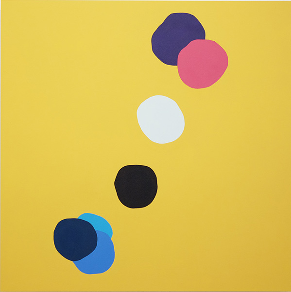
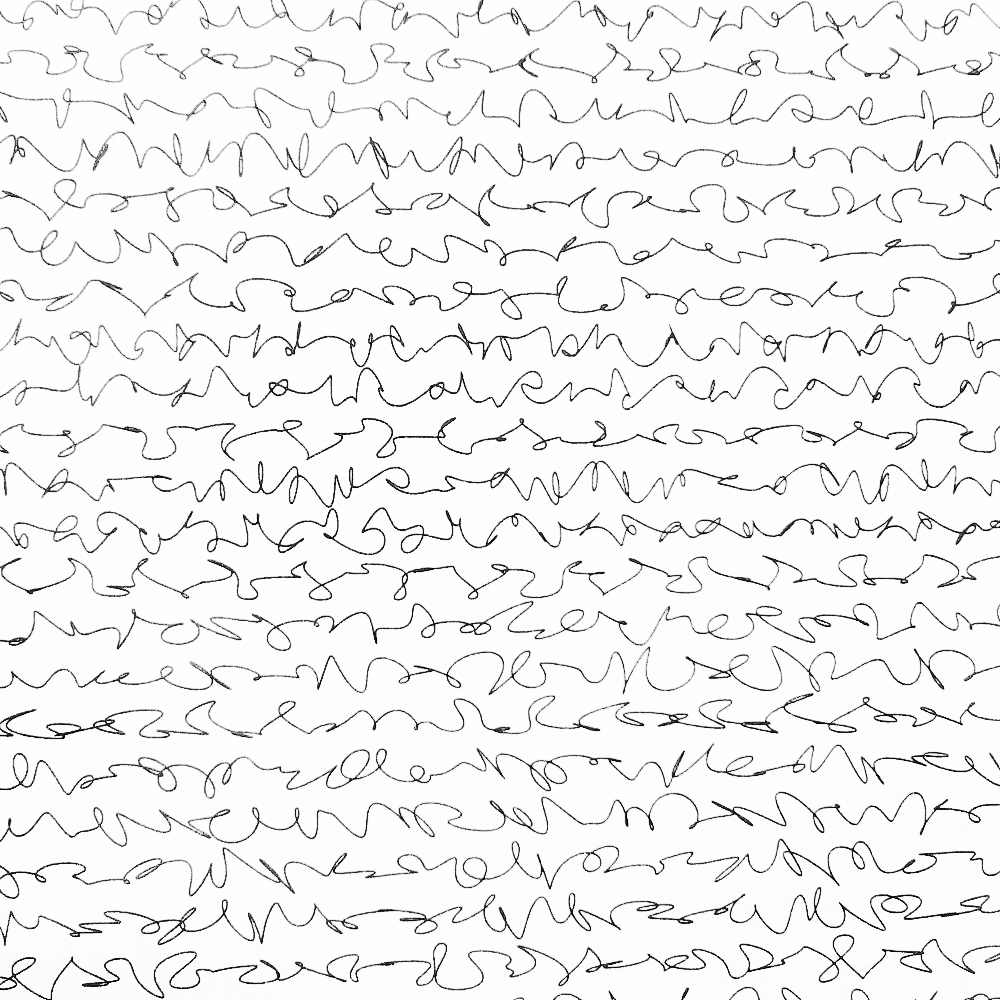

MATTHIS GRUNSKY 

ABOUT

A Fine Line @ Trapp Projects
A selection of my recent work was included in 'A Fine Line', a two person exhibition with M.E. Sparks that ran from June 12 to 26 at Trapp Projects in Vancouver.Documentation of the show can be accessed at the Trapp Projects Website



To-Do-To-Do
Presented by Number 3 Gallery as part of their SPAM monthly newsletter, To-Do-To-Do is a website collaboration between myself and M.E. Sparks. The project features a series of smaller web pages looking at different forms of list making.